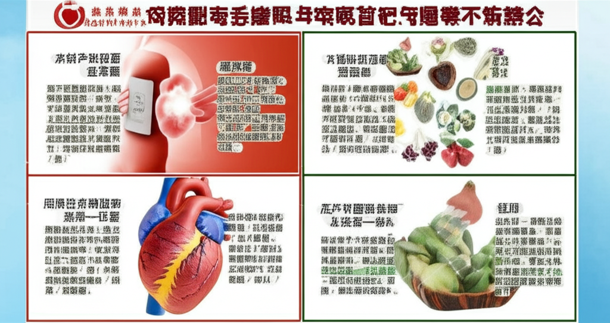

# 高血壓相關新聞分析與健康資訊
## 引言
高血壓是全球性的健康問題，與心血管疾病、腎臟疾病等重大疾病息息相關。從近期的新聞報導來看，高血壓的預防、控制與治療仍然是重要的公衛議題。本文將針對收集到的新聞資訊，分析高血壓的風險因子、控制方法與相關健康資訊。
## 主體內容
### 第一點：高血壓的風險與隱形威脅
新聞中提到，主動脈瘤被稱為「隱形不定時炸彈」，而高血壓是其主要危險因子之一。這凸顯了高血壓的潛在風險，不僅僅是血壓升高本身，更可能導致其他嚴重併發症。此外，案例中91歲陳女士因高血壓病史，加上季節交替氣溫變化，導致胸痛、呼吸喘，突顯了高血壓患者在氣候變化時更應注意血壓控制。這提醒我們，高血壓患者應定期監測血壓，並與醫生討論適合自己的血壓控制方案。
### 第二點：控制高血壓的方法與飲食建議
許多新聞都提到了控制高血壓的方法。 其中一則新聞提到飲用蘋果醋與蜂蜜的天然混合物可能輔助控制血壓，但需要注意的是，這僅是輔助方法，不能取代正規的醫療治療。另一則 YouTube 影片則介紹了一種飲食方法，聲稱堅持三個月後可以降低血壓血脂。雖然這些資訊提供了不同的角度，但最重要的是，控制血壓應遵循醫囑，並採取健康的生活方式，包括均衡飲食、適度運動、控制體重、戒菸限酒等。 此外，新聞也提及了控制血壓可以幫助保護腎臟，甚至避免腎衰竭，強調了早期控制高血壓的重要性。
### 第三點：其他相關健康資訊
除了高血壓本身，一些新聞也涉及了相關的健康議題。例如，報導提及一位醫學生因腎衰竭而出現高血壓等症狀，這表明高血壓可能是其他疾病的徵兆。另外，癌症免疫治療的新聞中提到副作用的控制，這也間接提醒了我們在關注高血壓的同時，也要留意其他潛在的健康風險，並定期進行健康檢查。
## 結論
高血壓是一個需要長期關注和管理的健康問題。透過新聞報導的分析，我們可以更清楚地了解高血壓的風險因子、控制方法與相關健康資訊。重要的是，我們應該主動採取健康的生活方式，定期監測血壓，並與醫生保持密切聯繫，共同守護我們的健康。